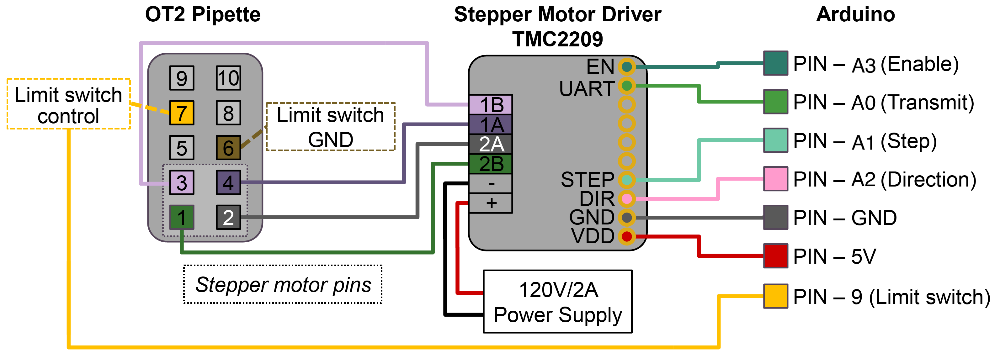

Build guide · CubXL+ / PANDA
Opentrons OT-2 Pipette Setup Guide
This page consolidates the current build, wiring, calibration, and CubOS integration notes for using an Opentrons OT-2 electronic pipette on a PANDA/Cub gantry. It covers the PAW/OT2 mechanical mount, Arduino stepper-control path, tip rack expectations, and the CubOS implementation that maps the legacy PANDA-BEAR OT2 pipette functions into current protocol commands.
Source: documentation/opentrons-pipette-setup.md in the Cubware repository.
What The Pipette Setup Does
The setup mounts an Opentrons electronic pipette on the PAW/OT2 backboard and drives the pipette plunger through the PANDA Arduino firmware. CubOS moves the gantry to source, destination, tip-rack, and tip-disposal coordinates, then sends serial commands to the Arduino for plunger actions such as home, aspirate, dispense, blowout, mix, pick-up-tip, and drop-tip.
The CubOS code path is implemented, but the OT2 pipette hardware path has not yet been validated on the physical machine in this checkout. Treat every position, model constant, and serial command as a commissioning value until it has been tested with the installed pipette, tip rack, and firmware.
Standalone BOM
Quantities are for one OT-2 pipette station unless noted.
| Qty | Item | Use | Part number / spec | Source | Cost in repo |
|---|---|---|---|---|---|
| 1 | OT-2 single-channel electronic pipette | Liquid handling instrument | P300, 999-00003 in legacy BOM |
Opentrons | USD 2,750 |
| 1 | Arduino Uno SMD R3 | Serial control path to PAW firmware | A000073 |
DigiKey | USD 26.30 |
| 1 | Adafruit TMC2209 stepper motor driver breakout | Drives the OT-2 pipette stepper motor | Adafruit 6121 |
Adafruit | USD 17.90 |
| 1 | 10-pin socket/socket IDC cable, 6 in | Connection to the OT-2 pipette | Adafruit 370 |
Adafruit | USD 2.00 |
| 1 | Uno R3 proto shield or equivalent | PAW control circuitry | Legacy BOM used Adafruit 2077; Cubware capper guide notes a generic Uno R3 protoshield alternative |
Adafruit | USD 9.95 |
| 1 pack | Aluminum SMT heat sinks, 10-pack | Heat sink for the TMC2209 stepper driver | Adafruit 1515, 0.27" x 0.27" x 0.14" |
Adafruit | USD 4.95 |
| 1 set | Jumper wires | Arduino/protoshield wiring | Female-female 4447, extension 4635, male-male 4482 |
Adafruit 4447, Adafruit 4635, Adafruit 4482 | USD 9.95, USD 11.95, USD 9.95 |
| 1 | USB extension cable | Communication with PAW hardware | 10-15 ft USB extension, UPC 686878976212 |
Amazon | USD 8.99 |
| 1 kit | M3-M6 bolt kit | Mounting hardware for PAW/backboard parts | Kwokker M3-M6 bolt kit, 20 sizes | Amazon | USD 23.99 |
| As needed | Opentrons-compatible tips | Disposable pipette tips | Match the installed pipette model and tip rack geometry | Opentrons or equivalent | Not listed |
Printed / Fabricated Parts
| Qty | Part | File | Notes |
|---|---|---|---|
| 1 | OT2 backboard mount | ../cubxl_plus/instrument_mounts/backboard/ |
Main backboard that bolts to the OT-2 frame and carries the PAW-V2 mounts |
| 1 set | OT2 mount spacers | ../cubxl_plus/instrument_mounts/backboard/ |
Sets the backboard standoff from the OT-2 frame |
| 1 | Legacy PAW-V2 OT2 mount | ../cubxl_plus/instrument_mounts/backboard/PAW-V2 - OT2Mount_REV. 1 - OT2Mount.stl |
Cubware STL copy of the legacy PANDA-BEAR OT2 mount |
| 1 | Tip rack | ../cubxl_plus/labware/tip_rack_holder/ |
CubOS tip-rack labware definition includes tip_length, pickup slots, and consumed-tip tracking |
| 1 | Used-tip disposal target | CubOS deck YAML tip_disposal labware |
Needed for drop_tip protocol commands |
Mount The Pipette
- Print the OT2 backboard and spacer parts from
../cubxl_plus/instrument_mounts/backboard/. - Bolt the backboard to the OT-2 frame and confirm the plate is rigid before adding the pipette.
- Mount the Opentrons pipette with the PAW-V2 OT2 mount hardware.
- Route the pipette cable and Arduino USB cable so they cannot enter the gantry travel envelope.
- Install the tip rack and used-tip disposal target on the deck.
- Confirm the pipette nozzle can reach the intended tip-rack, source, and destination positions without the pipette body, cable, or backboard colliding with the deck or neighboring tools.
The legacy PANDA-BEAR checkout contains only the OT2 mount STEP file and wiring evidence for this assembly. It does not contain a full mechanical drawing with all fastener lengths, cable clips, or installation dimensions.
Wire The Arduino Control Path
The OT2 pipette is controlled by the PAW Arduino firmware, not by the Opentrons
robot API. CubOS talks to the Arduino over serial at 115200 baud by default.

Use the diagram as the current wiring reference for the Arduino/TMC2209/pipette control interface. The legacy PANDA-BEAR wiring docs point to the external BU-KABlab/PANDA_Arduino repository for firmware source, pin assignments, and installation instructions.
Attach the Heat Sink to the TMC2209
Before wiring the TMC2209 into the control circuit, fit it with the Adafruit
1515 heat sink so the driver doesn't thermal-throttle or shut down under
sustained plunger moves:
- Peel the adhesive backing off one heat sink from the Adafruit
1515pack. - Center the heat sink, fins up, over the TMC2209's driver IC (the largest chip on the breakout) and press firmly for a few seconds to set the thermal tape.
- Check that the fins clear the breakout's pin headers and don't foul the protoshield or neighboring components once seated.
Before running pipette commands:
- Flash the PAW Arduino firmware that supports the pipette command set.
- Connect the Arduino to the CubOS host.
- Identify the serial port, for example
/dev/ttyUSB0,/dev/ttyACM0, or a macOS/dev/tty.usb*device. - Confirm no other process has the serial port open.
- Keep the pipette clear of tips, liquids, and deck fixtures for the first home/status checks.